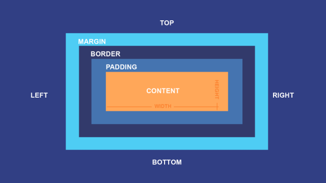

We've learned that the best way to think about CSS is to imagine there's an invisible box around every HTML element we write. By using CSS, we can change both:
For example, we can create a CSS rule that defines the width: or height: of some element as a unit of size, like pixels (px) or root em (rem).
However, when we define the width and height of an element (let's say, for example, an <h2> element), we're actually only defining the width and height of the content itself. For example, we can style a regular <h2> element with a CSS rule that declares:
h2 {
width: 350px;
background-color: black;
color: white;
}
But let's say that I want to add another <h2> with a different background color. So I go and write something like this:
h2.blue {
width: 350px;
background-color: blue;
color: white;
}
As you can see, the browser has automatically put some space in between the two elements.
But let's say that I don't want the space to be that big. Say I want the two boxes to touch each other with no space in between, and to make the area between the text and the outside of each box a bit bigger.
As our webpages get more complex, we'll want to control the appearance and spacing of both our content and the areas around it.
Therefore, we'll have to think about styling not just content, but the entire "box" around that content.

Imagine, like above, we have an HTML element <h2>. You can think of its text as being located within an invisible Content box. As you will see, we can think of <h2> as surrounded by three other boxes, in a specific order:
Thus, we calculate the total width/height of <h2> by adding up the following:
Now, as we begin to style <h2> on our page, we can (and should) take into account not only <h2>, but the entire box model around it.
Below, I have created a <p> element that we can use to test the "box model" of CSS. In the corresponding CSS file, try adjusting the size of the Padding and Margin boxes, as well as the size and style of the Content and Border boxes.
Play around with the box model!
This paragraph is here as reference text for when you play with the margin.